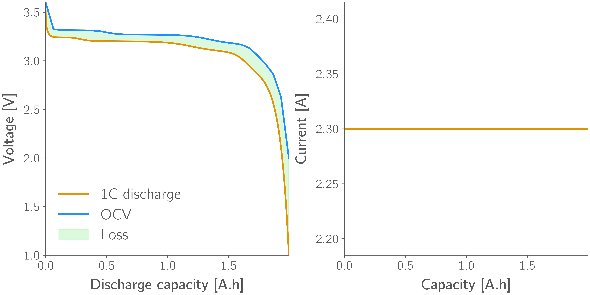
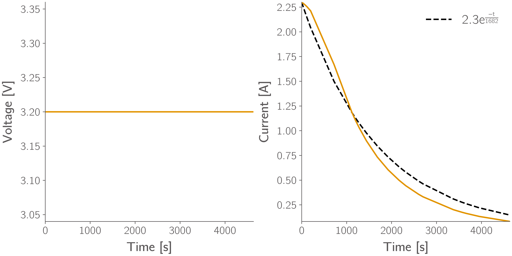
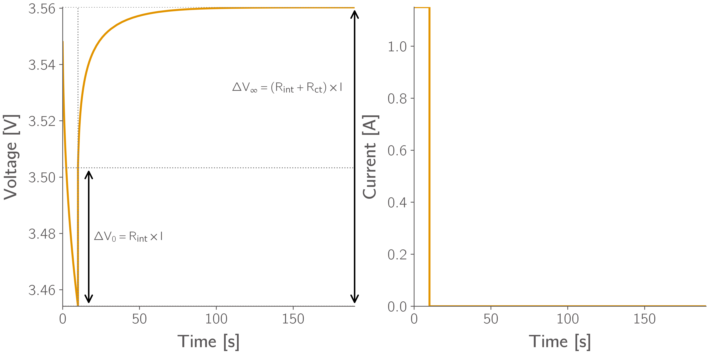
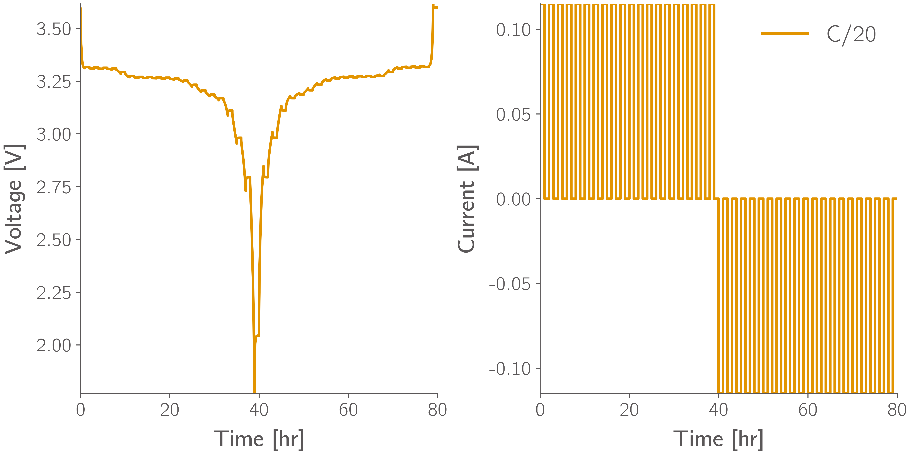
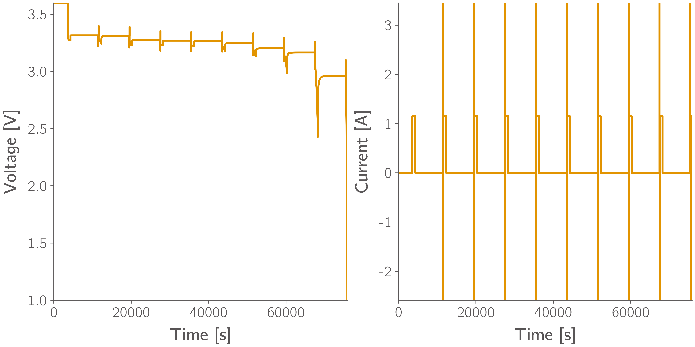
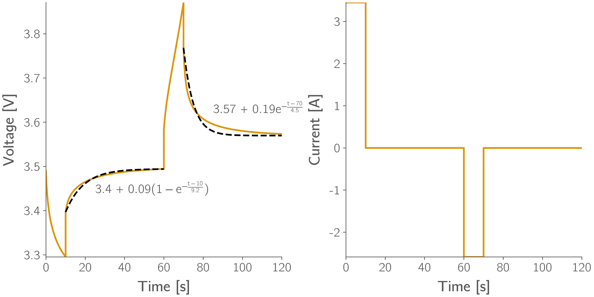
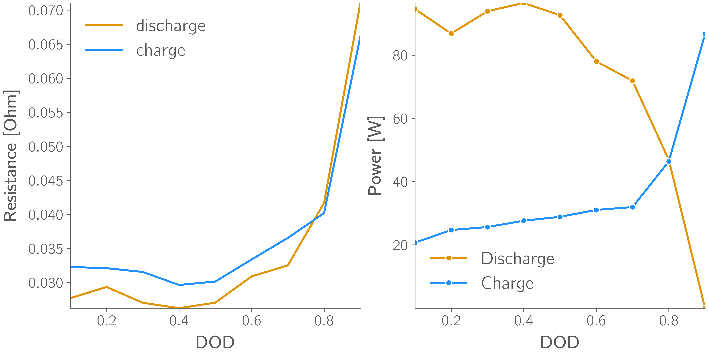
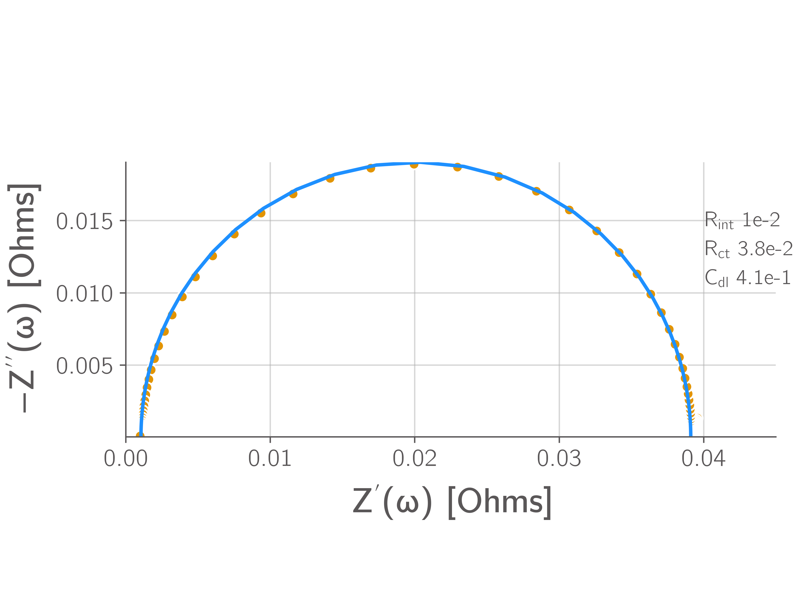

M1.3 - Electrochemical Testing#
Basic Circuit Elements#
Resistor#
A resistor dissipates electrical energy as heat and hinders the flow of electrical current in a circuit, \(V = I R\).
Capacitor#
A capacitor stores electrical energy as charge stored in the capacitor.
Inductor#
An inductor stores electrical energy in a magnetic field.
Voltage Source#
A voltage source maintains a prescribed voltage difference independent of the current drawn. \(V(t) = V_{\text{s}}\)
Current Source#
A current source maintains a prescribed current independent of the voltage across it. \(I(t) = I_{\text{s}}\)
Electrochemical Testing#
Galvanostatic discharge#
In a galvanostatic discharge, the cell is discharged at a constant current, and the terminal voltage is recorded as a function of time. From this test, total capacity of the cell, the energy content, and the effective internal resistance can be extracted.
Consider the equivalent circuit with only an internal resistance, the voltage recorded is \(V = V_{ocv} - I R_{int}\). With a constant current, this can be used to extract the internal resistance. The galvanostatic discharge for a graphite/LFP Li-ion cell is shown.

Potentiostatic Discharge#
In a potentiostatic discharge, the cell is held at a fixed potential below its open-circuit voltage, and the current response is recorded over time. This technique provides insight into reaction kinetics, mass transport, and capacitance-like behavior of the system for a series R-C circuit.
Under a potentiostatic discharge,
We can solve for the current dynamics as:
Differentiating both sides gives:
since \(\Delta V\) is a constant. Solving this gives,

Pulse Current Profile#
A pulse current profile is a popular method where a constant current pulse \(I_p\) for a finite duration, \(t_p\) followed by a relaxation period, \(t_{rest}\) where the current is set to zero. This allows the system to approach a near-equilibrium state while monitoring transient behavior. During the pulse, the voltage decreases due to resistance and other dynamics associated with the system.
The measured voltage is,
Across the R-C element, Kirchoff’s law gives,
For a galvanostatic discharge,
During relaxation, the voltage recovers back towards the open circuit voltage. The instantaneous voltage recovery is from the portion associated with the internal resistance, and then the voltage associated with the R-C element relaxes as shown in the figure below.

Galvanostatic Intermittent Titration Technique (GITT)#
It involves applying a series of current pulses and monitoring the resulting voltage response. The advantage of this technique is to extract the information contained in a galvanostatic discharge along with extracting the open circuit voltage.

Hybrid Pulse Power Characterization (HPPC)#
HPPC test is method designed to determine the power capability and resistance characteristics for electric vehicle applications. A discharge pulse at a specified current, \(I_d\) is applied for 10 seconds, followed by a rest period. Then, a charge pulse, \(I_c = 0.75 I_d\) is applied for 10 seconds. This sequence is repeated at different SOC levels. The fitting is done similar to pulse profile. 

HPPC test can be used to extract the power capability of a cell by extracting the resistance and then using a simple internal resistance model to estimate the peak current at that SOC
then determining the power,
. Similarly, the charge region is determined,
then determining the power,
. This is shown below: 
Electrochemical Impedance Spectroscopy (EIS)#
In EIS, we apply a small sinusoidal perturbation (voltage or current) at angular frequency \(\omega=2\pi f\) and measure the linear response. Using complex notation,
the impedance is the complex ratio
Plots of \(Z''\) vs. \(Z'\) give the Nyquist spectrum (no frequency axis shown), and \(|Z|\) and \(\angle Z\) vs. \(f\) give Bode magnitude and phase.
Resistor \(R\): \(Z_R = R\).
Capacitor \(C\): \(Z_C = \dfrac{1}{j\omega C} = -\dfrac{j}{\omega C}\).
Inductor \(L\): \(Z_L = j\omega L\).
ECM 1: Internal Resistance#
Nyquist: a single point at \((Z',Z'')=(R_0,0)\). Bode: \(|Z|=R_0\), phase \(0^\circ\) at all \(f\).
ECM 2: Parallel R-C#
The complex impedance is given by:
Define the dimensionless frequency \(x \equiv \omega \tau\) with \(\tau \equiv R C\).
Then
Multiply numerator and denominator by the complex conjugate to obtain the real and imaginary parts:
Magnitude and phase
Low/high frequency limits
Nyquist (parametric) form
Parametrically the Nyquist plot is
This parameterization traces a semicircle: algebraically one finds
i.e. a circle centered at \(\big(\frac{R}{2},\,0\big)\) with radius \(R/2\). Since \(Z''\le0\) the physical branch produces the lower half of the circle (negative imaginary axis). The semicircle center and radius make the parallel \(R\parallel C\) useful pedagogically: it produces a single ideal semicircle in Nyquist without needing an explicit series resistor. Adding a series \(R_0\) simply translates the circle right by \(R_0\).
